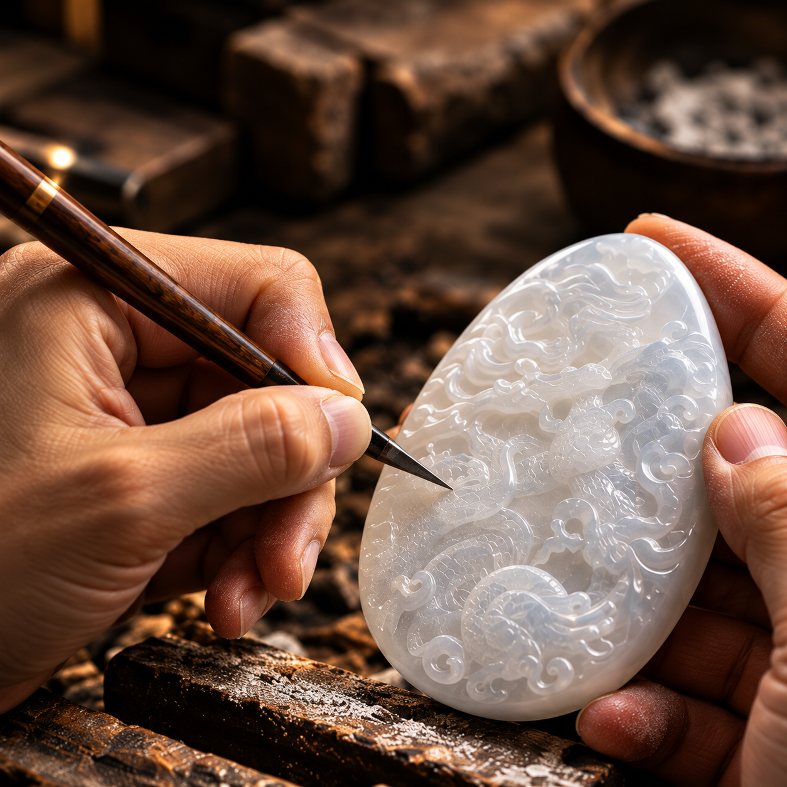

THE IMPERIAL HERITAGE
Under Emperor Qianlong, jade craftsmanship and artistic excellence reached extraordinary heights, establishing an enduring legacy of imperial refinement and distinction
DISCOVER THE QING DYNASTY1711 — EARLY YEARS
Born in 1711 as Hongli, he grew up within the refined world of the Kangxi and Yongzheng courts, surrounded by art, literature, and calligraphy. From an early age, he was introduced to the cultural foundations that would shape his deep appreciation for jade, art, and the imperial aesthetic.
These formative years laid the foundation for a lifetime of connoisseurship — a reign defined not only by power, but by a profound respect for the arts.
"A legacy of prosperity,
refinement, and enduring influence."
1735 — THE ASCENSION
At the age of twenty-four, Hongli ascended the throne as Emperor Qianlong, marking the beginning of a new era for the Qing Dynasty.
Under his rule, the empire entered a period of stability and cultural flourishing — a time of strengthened governance, refined arts, and remarkable imperial patronage.
"A new era began,
shaping a lasting legacy."
THE EMPEROR & JADE
In jade, the emperor found more than beauty - a reflection of virtue, artistry, and enduring meaning
AN EDITORIAL REFLECTION ON QIAN LONG'S APPRECIATION OF JADE

1736–1795 — IMPERIAL CRAFTSMANSHIP
Under Emperor Qianlong's patronage, jade carving reached extraordinary levels of artistic refinement within the imperial workshops.
Guided by patience and precision, master artisans transformed precious stone into works of enduring cultural significance.
"Where craftsmanship
becomes an enduring legacy."
AN ENDURING PHILOSOPHY
Under Emperor Qianlong's patronage, art, knowledge, and craftsmanship reached new heights of refinement. Beyond imperial grandeur, his era reflected an enduring pursuit of harmony, mastery, and cultural excellence.
"True greatness is not merely attained.
It is cultivated."
An enduring tradition of authenticity, refinement, and exceptional quality. Preserved through history. Upheld by Anggara Treasures
DISCOVER ANGGARA TREASURES